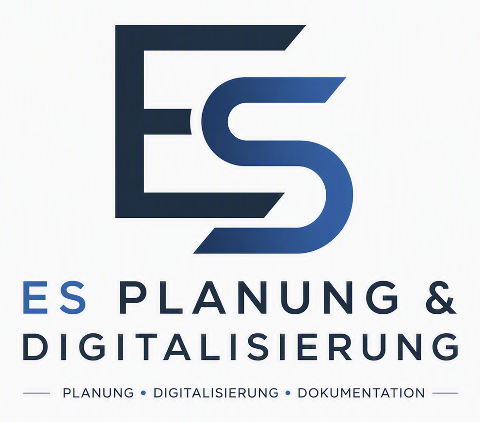

Grundrisse & Planaufbereitung
Erstellung, Digitalisierung und Überarbeitung von Gebäudegrundrissen auf Basis vorhandener Unterlagen oder einer Bestandsaufnahme.
Technische Planung und digitale Unterstützung für bestehende Kunden und ausgewählte Projekte - strukturiert, nachvollziehbar und praxisnah.

Von der Aufbereitung vorhandener Grundrisse über die Dokumentation bestehender Anlagen bis zur Planung neuer Systeme und interaktiven 3D-/HTML-Dokumentationen.
Erstellung, Digitalisierung und Überarbeitung von Gebäudegrundrissen auf Basis vorhandener Unterlagen oder einer Bestandsaufnahme.
Aufnahme und Dokumentation vorhandener technischer Anlagen und Komponenten.
Planung und zeichnerische Ausarbeitung neuer sicherheitstechnischer Anlagen auf Grundlage der Gebäude- und Projektanforderungen.
Erstellung und Überarbeitung von Feuerwehrplänen und Feuerwehrlaufkarten auf Grundlage geeigneter Gebäude-, Anlagen- und Meldergruppendaten.
Aufbereitung von Gebäude- und Anlagendaten als interaktive HTML-Dokumentation oder 3D-Modell.
Erstellung verständlicher technischer Unterlagen, die nicht nur allgemeine Herstellerinformationen wiedergeben, sondern die tatsächliche Situation am jeweiligen Standort berücksichtigen.
Bei Bedarf können Gebäude, Räume und vorhandene technische Anlagen direkt vor Ort aufgenommen werden.
Die Leistungen werden individuell nach Art, Umfang und Komplexität des jeweiligen Projektes zusammengestellt.
Festpreis nach Projektumfang
Individuelles Angebot anfordernFür bestehende Kunden und konkrete Projektanfragen.
Eric Staskiewicz
ES Planung & Digitalisierung
info@es-planung-digitalisierung.de
es-planung-digitalisierung.de